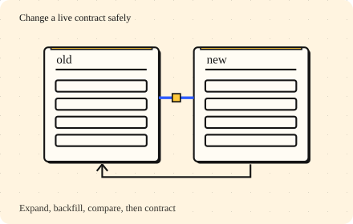

Lead the design · 7 minutes
Changing a running system
A safe migration preserves compatibility through the whole rollback window.
Open this lesson
The new column is ready, but old apps are not
You want to replace a free-text address with structured fields. Web code can update today, but mobile clients will keep sending the old shape for months. A migration is a period when multiple schemas and code versions coexist. A deployment that works only after every client updates is not a rollout plan.
Expand, move, contract
Advance a live table through compatible schema expansion, dual writes, backfill, comparison, cutover and contraction. Inject a stage failure, keep writing, then inspect the rollback boundary.
Worked example: how long it takes
Retries, live changes, reconciliation, indexes and replicas add work beyond these lower bounds. A canary might admit 1%, 5%, 25% and then all eligible traffic. Percentages do not replace minimum observation time or coverage of large tenants. The traffic engine does not execute schema changes row by row.
Copy time and catch-up time differ
- Backfill: 27.8 hours: 500 million rows / 5,000 rows/s. About 250 GB at 500 bytes/row.
- Catch up: 2.8 hours: 30 million changes / (5,000 − 2,000 live changes/s).
- Verify before routing: Include minimum observation time and large-tenant coverage in the canary.
Rollback is a data decision
Define which reader versions understand new writes and what happens to writes accepted during a canary. A code rollback is unsafe when old readers cannot understand the new representation. Preserve compatible writes or test a reverse transform. Agree ownership with application and data teams, on-call, security, product and support. Calendar time can be weeks even when copying bytes takes a day.
Rollback follows the data
- Preserve old readers: Keep compatible writes during backfill and the canary.
- Watch stop thresholds: Mismatch rate, lag, p99 and lock time can pause the rollout.
- Contract only after proof: Dropping old data ends a code-only rollback. Reserve a stable rollback period first.
Key numbers
- Backfill floor
- ≈ 27.8 hours. 500 million ÷ 5,000/s
- Logical copied bytes
- ≈ 250 GB. 500 million × 500 B, before index and replication
- Change catch-up
- ≈ 2.8 hours. 30 million ÷ (5,000 - 2,000)/s
Check your reasoning
Think through these questions before opening the lesson. In the game you can test the idea and compare your reasoning.
- A backfill reads version 5, then a live write creates version 6. What prevents the delayed copy from regressing the target?
- Why not write to both databases in the request handler? Follow-up: the first write succeeds and the second times out.
- A canary writes a new enum that old code cannot parse. What must be addressed before reverting the binary?
- The backfill takes one day. Why did you ask for three weeks? Follow-up: who can stop the rollout?
- A 1% canary passes for thirty seconds on a low-volume service. What evidence is still missing?
The key point
Migrate through compatible states and prove that rollback still understands the data.
Practise this idea
- Medium
Patient health records
A hospital network keeps patient charts, orders, notes and scanned documents for 40 hospitals. Doctors need a chart in under a second, no saved note may be lost when a server or a building fails (in a whole-region disaster, at most the last minute of edits may need re-entering from the ward), and an auditor can walk in any day and ask you to prove who looked at what.
- Hard
Black Friday marketplace
Once a year a marketplace puts thousands of deals live at the same minute. Millions browse and search, a few doorbuster items get hammered, and a smaller crowd checks out. A payment must never be taken twice, and the day must survive the card processor having a bad hour.
- Medium
CI/CD build system
Every time a developer saves code to the shared repository, you build and test it. Thousands of developers do this all day, and release day brings a rush. Builds must start quickly, but idle build machines cost real money.
- Medium
Feature flag service
Companies turn features on and off for groups of users without redeploying. Millions of apps ask "is this on for me?", and the answer must be instant. A wrong flag value can take down an entire customer, so changes must roll out safely and be reversible in seconds.